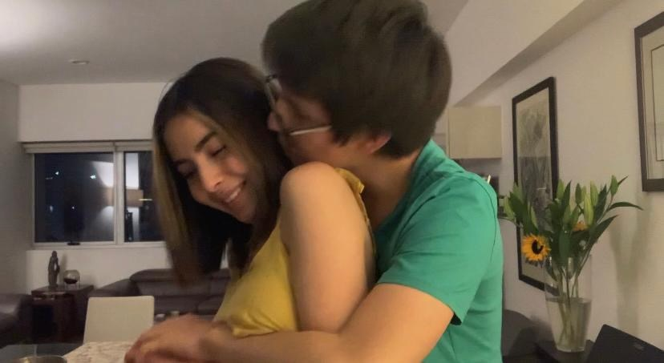

2 de febrero
Hi baby, espero que te haya gustado el regalo de ayer ❤️️
Hoy te quiero agradecer por todo lo que he aprendido gracias ti.
Sofi, gracias ti he crecido muchísimo en varios aspectos; he aprendido cosas que jamás creí que fueran interesantes, pero gracias a ti me pude acercar a ellas. Me has enseñado mucho acerca de cómo dealer con mis emociones de una manera mucho más saludable, cómo comunicarme, mucho acerca de arte (aunque nada comparado con lo que tú sabes haha), entre muchas otras cosas.
Otra canción muy bonita:
Un foto cute de nuestro primer día de novios:
